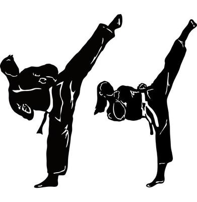
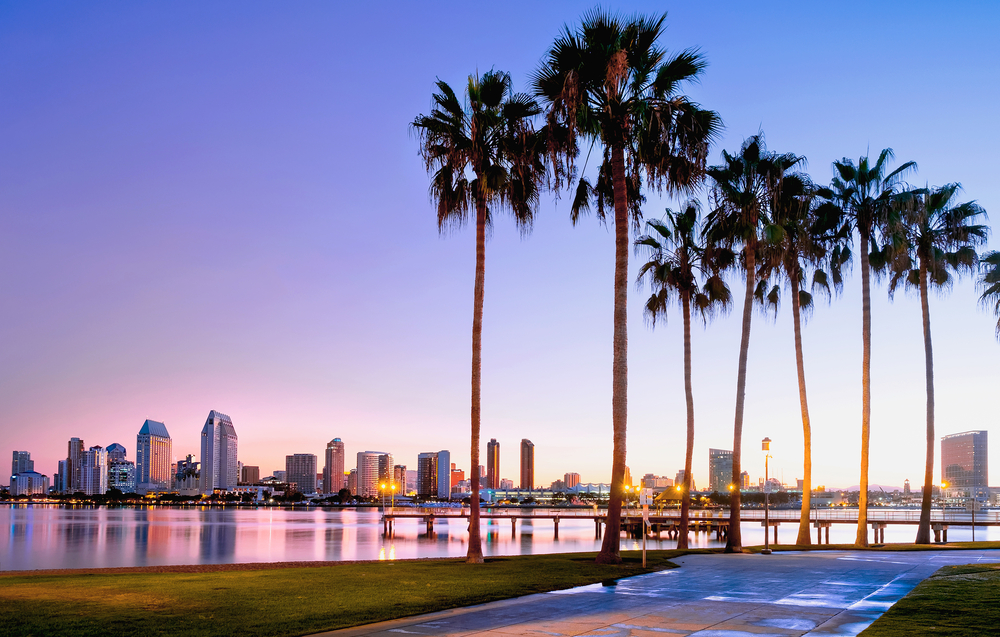
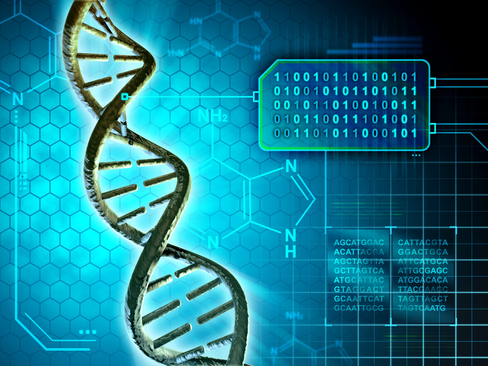

 I started doing taekwondo for one sole reason, to learn how to defend myself. After just a few weeks, I got what I needed but then realized I absolutely loved taekwondo. It is not just a sport, it is an art that teaches a person so much more than just how to kick or punch. Beyond just the color, each advancement in belt level comes with a new responsibility, higher expectations, and more attention to detail. As a whole, taekwondo teaches a person how to understand discipline, respect, and perseverance in ways nothing else ever can. It has not just helped me grow as a martial artist, but as a person altogether, teaching me skills that I can apply outside of the studio too.
I was born and raised right here in San Diego, California. I have grown up here and I am so eternally grateful to be able to call this place my home. I grew up without any siblings, and I feel like that played a huge part in shaping me into the person I am today. The way I perceive myself and situations around me are so different than it would be if I grew up with a sibling. While I live with my parents, the majority of my family lives far away in India, or in other states. I have a few close cousins that I grew up with that happened to live either in my community or a couple blocks away. While I spent the first six years of my school life going to a private school, the years I spent after that in a public school had really had an impact on the way I developed. The name of the public school was Ellen Browning Scripps Elementary (EBS). Overall, I am really happy in the way I was raised and grew up, and I would not change anything about my upbringing even if I had the choice to.
In the little free time I have, I mostly just love spending time with family and friends. Every spare moment I have that I do not have any work to do, I love having conversations with my parents and just spending any sort of quality time with them. We love going on walks, especially at the beach or going on fun adventures together. Aside from that, I love doing debate as I’ve been doing it since I was in 4th grade and I think it helps build really important skills that everyone should have. I also have a nonprofit where we help educate underprivileged children in India and I am really passionate about it (link). I am really interested in biology and computer science, which is what led me to want to major in computational biology, particularly in oncology, or some branch related to it.